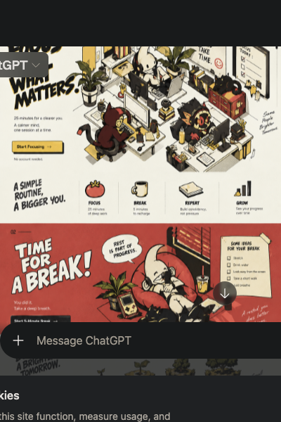
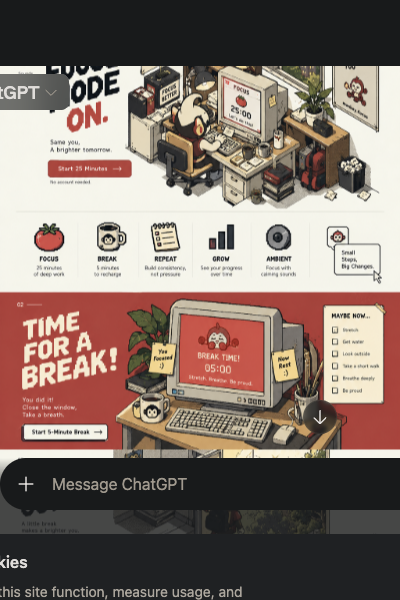

시간을 정해요
집중과 휴식 시간을 내 리듬에 맞게 설정합니다.


해야 할 일을 정하고 타이머를 시작하세요. 지금은 그것 하나면 충분합니다.
화면이 꺼지면 자리에서 일어나세요. 강제 휴식 잠금이 정해둔 휴식을 지켜줍니다.
집중과 휴식 시간을 내 리듬에 맞게 설정합니다.
빈티지 시계가 세션을 반복하고 오늘의 집중을 기록합니다.
선택한 경우 휴식 동안 키보드를 잠가 실제로 쉬게 합니다.
휴식 동안 키보드 입력을 막습니다. 설정에서 켜고 끌 수 있습니다.
같은 Wi-Fi에 있는 Windows와 Mac의 타이머 상태를 맞춥니다.
오늘 실제로 완료한 집중 시간을 기기에 기록합니다.
설정과 기록은 로컬에 저장됩니다. 가입 없이 바로 사용합니다.
다음 25분은 한 가지에 주세요.
끝나면 화면 밖으로 나가세요.